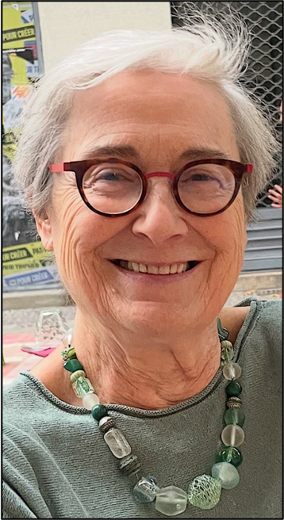

Toulouse Hypnose Médicale
Dr. Martine Mazières

📞 Téléphone : 06 14 48 93 73
✉️ Email : martine.mazieres@gmail.com
📍 Adresse : 7, rue des Arts, 31000 Toulouse
🚇 Métro : Esquirol (A) ou Carmes (B)
🅿️ Parkings : Esquirol, Carmes ou Saint-Étienne
Renseignements pratiques
- La consultation dure environ une heure : 80€ la séance.
- Pour le sevrage tabagique, la première séance dure environ 1h30 (100€) et une heure les suivantes.
- Les consultations sont hors-nomenclatures, réglables par chèque ou espèces.
- Une attestation de paiement peut être établie pour les mutuelles.
Dr. Martine Mazières
Praticienne en hypnose médicale
Hypnothérapeute
- Docteur en Médecine (faculté de médecine de Toulouse), Médecin anesthésiste réanimatrice
- Diplôme Universitaire d'Hypnose Médicale de la Pitié-Salpétrière (Université Paris Descartes) avec spécialisations « enfants et adolescents », « addictions », « douleurs aiguës et chroniques » et « autohypnose »
- Membre de l'Association Française pour l'Étude de l'Hypnose Médicale (AFEHM)
- Formations reçues :
- AFEHM (Paris), Institut Émergences (Rennes), Institut Hypnosium (Biarritz), IMHETO (Institut Milton Erickson de Toulouse Occitanie); tous membres de la Confédération Francophone d'Hypnose et de Thérapies Brèves.
- Collège International des Techniques par Activation de la Conscience (CITAC) et Hypnodyssey (Dr. Jean Becchio).
- Formations dispensées :
- Formatrice pour l'AFEHM dans le cadre de stages pratiques
- Formatrice OGDPC (Organisme Gestionnaire du Développement Professionnel Continu) en communication thérapeutique et hypnose péri-opératoire (Centres Hospitaliers de Montauban, Tarbes, Béziers)
- Publications académiques